Group 1 (พุธ 9.30-12.30 @ LX 12/2) — สรุปจากสไลด์
INT182_02_EDA-Model-Fitting.pdf(40 หน้า, อ.พรชัย มงคลนาม) เป็นโครงหลัก เสริมด้วยสิ่งที่อาจารย์พูดเพิ่มจาก transcript ของคาบ (INT182_G1_20260819.docx) และโค้ดตัวอย่างที่แจกมาใน../code/LinearReg_auto.R⚠️ transcript เป็นคำถอดเสียงอัตโนมัติ คุณภาพต่ำหลายช่วง — ส่วนที่มาจาก transcript อย่างเดียวจะระบุว่า (จาก transcript) ตัวเลขที่ถอดมาไม่ชัดจะกำกับไว้
หมายเหตุเรื่องกลุ่ม: ไฟล์นี้เป็นคาบของ กลุ่ม 1 (พุธ) ซึ่งเรียนก่อนกลุ่ม 2 หนึ่งวัน เนื้อหาตามหลักสูตรเป็นสัปดาห์เดียวกัน แต่กำหนดส่งงานของกลุ่ม 2 อาจไม่ตรงกับที่ระบุในหัวข้อ 16 ให้ยืนยันในคาบของตัวเองอีกครั้ง
สไลด์ชุดนี้เริ่มเปิดไปแล้วประมาณ 16 หน้าแรกตั้งแต่ปลายคาบสัปดาห์ที่ 2 — ไฟล์นี้รวมทั้งชุดไว้ที่เดียว
Agenda
- วิวัฒนาการของ DS: OLTP → OLAP → Big data
- EDA คืออะไร
- Modeling / Data Modeling / Data Fitting / Model Fitting
- Parameter กับ Hyperparameter
- Model bias — underfitting และ overfitting
- ภาพรวมวิธีการ ML ที่ใช้ใน DS
- ประเภทของข้อมูลและมาตรวัด
- การแจกแจงข้อมูล mean/median/mode
- Box plot
- Scatter plot และ Correlation
- Linear regression
- อ่านผลลัพธ์ของโมเดล
- ตัวแปรเชิงประเภทในสมการ
- ลงมือ: R และ RStudio
- เทียบผลกับ Orange
- งานที่สั่ง
01 วิวัฒนาการของ Data Science
หนึ่งในแง่มุมสำคัญที่สุดของ DS คือการ หา/รู้จำ (recognize) และประเมิน pattern — คำว่า recognize หมายถึง pattern ที่ไม่ได้คาดไว้ล่วงหน้า
เส้นเวลา:
Relational databases (1970, ต่อมากลายเป็น DBMS) → OLTP → OLAP → Pattern recognition / recommendation systems → Big data (ที่ต้องการ DS, ML และ DL)
| ตัวย่อ | ย่อมาจาก | ใช้ทำอะไร |
|---|---|---|
| OLTP | Online Transaction Processing | ช่วยตอบคำถามเชิงรายการ เช่น online banking |
| OLAP | Online Analytical Processing | สำรวจและแสดงผลข้อมูล ใช้ multidimensional database เช่น data warehouse |
(จาก transcript) OLTP คือธุรกรรมที่เกิดขึ้นบ่อยและเร็วมาก เช่นถอนเงิน ฝากเงิน จ่ายเงิน หรือซื้อของที่ร้านสะดวกซื้อ — เป็นการแลกเปลี่ยนข้อมูลระหว่างสองฝ่ายที่เกิดถี่ ๆ ส่วน OLAP คือการเอา transaction ที่มี time stamp เหล่านั้นไปเก็บใน data warehouse แบ่งตามช่วงเวลา แล้วเอามาวิเคราะห์ย้อนหลัง
ส่วน relational database ที่คุ้นเคยกัน (ใช้ SQL = Structured Query Language) เกิดขึ้นตั้งแต่ปี 1970 มี table และความสัมพันธ์แบบ one-to-many ฯลฯ
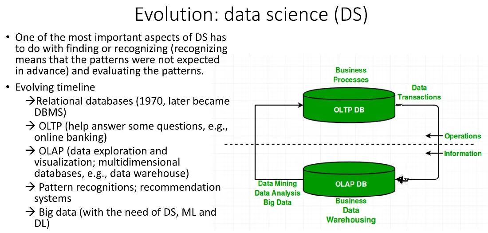
02 EDA คืออะไร
Exploratory Data Analysis (EDA) คือเทคนิควิเคราะห์ข้อมูลที่ช่วยให้เข้าใจข้อมูล โดยสรุปคุณลักษณะหลักของมันออกมา มักใช้กราฟทางสถิติและวิธี data visualization อื่น ๆ
EDA เป็นวิธีแบบ non-parametric — ไม่ตั้งสมมติฐานใด ๆ เกี่ยวกับการแจกแจงที่แท้จริงของข้อมูล
จุดที่ต้องแยกให้ออก (สไลด์เน้นไว้ตรง ๆ):
- Box plot เป็น EDA chart
- Linear regression ไม่ใช่ EDA — มันคือ data modeling ชนิดหนึ่ง
- แต่ EDA ใช้หา pattern และแนวโน้มในข้อมูล ซึ่งเอาไปสร้างโมเดล linear regression ต่อได้
EDA ประกอบด้วย data visualization + statistical summaries + hypothesis testing
(จาก transcript) วัตถุประสงค์หลักคือเข้าใจคุณลักษณะสำคัญของ data ก่อนเอาไปวิเคราะห์ต่อ เช่นดู dataset รถยนต์ว่าแต่ละ feature เป็นอะไร ช่วงค่าเป็นอย่างไร มี missing data เยอะไหม จาก 26 คอลัมน์จะใช้หมดหรือเปล่า — ถ้าดูจากตารางตัวหนังสืออย่างเดียวจะเข้าใจยาก จึงต้อง plot และเป็น กระบวนการที่ทำซ้ำได้ (iterative) ไม่ใช่ทำครั้งเดียวจบ เทียบได้กับการทำ prototype หยาบ ๆ ในงานซอฟต์แวร์ เพื่อเช็คบางอย่างก่อนที่จะลงแรงจริง
จำนวนตัวแปรที่วิเคราะห์พร้อมกัน
| คำ | จำนวนตัวแปร | ตัวอย่าง |
|---|---|---|
| Univariate | 1 | box plot (มีแกนเดียว) |
| Bivariate | 2 | scatter plot (แกน x และ y) |
| Multivariate | 3 ขึ้นไป | ทำนาย price จาก horsepower + engine size + brand |
03 Modeling / Data Modeling / Data Fitting / Model Fitting
สี่คำนี้สับสนกันง่ายมาก สไลด์แยกไว้ชัด
Modeling (กว้างที่สุด)
การสร้าง ตัวแทนอย่างง่าย (simplified representation) ของระบบหรือกระบวนการ ทำได้หลายวิธี เช่นสมการคณิตศาสตร์, computer simulation หรือ physical model
Model fitting เป็นกระบวนการที่ต้องทำวนซ้ำ เพราะโดยทั่วไปมีหลายวิธีที่ใช้กับงานเดียวกันได้ และแม้ใช้วิธีเดียวกันก็ยังมี parameter ให้ตั้งได้หลายค่า ทำให้ได้ configuration ที่ต่างกัน
(จาก transcript) ตัวอย่างที่ยกในคาบ: การโมเดลทิศทางและความเร็วของพายุว่าจะเข้าจังหวัดไหนเมื่อไหร่ ต้องเก็บข้อมูลจากเซ็นเซอร์ (ความเร็วลม ความชื้น ความดันอากาศ) มาวิเคราะห์ หรือโมเดลเครื่องบินขนาดเล็กในอุโมงค์ลมก่อนผลิตจริง
Data Modeling
กว้างกว่า data fitting — คือการสร้าง ตัวแทนเชิงแนวคิด (conceptual representation) ของข้อมูล ใช้เพื่อ
- เข้าใจข้อมูล
- สื่อสารข้อมูลให้คนอื่นเข้าใจ
- สร้างระบบที่ใช้ข้อมูลนั้น
สร้างได้หลายแบบ ทั้ง mathematical model, statistical model และ conceptual model เช่น ERD (data entities and relationships), DFD, UML (จาก transcript: คือสิ่งที่เรียนในวิชา System Analysis and Design นั่นเอง)
Data Fitting
เจาะจงที่การ หาฟังก์ชันคณิตศาสตร์ที่อธิบายข้อมูลที่มีอยู่ได้ดีที่สุด
- ใช้ interpolate/extrapolate จุดข้อมูลใน dataset
- เทคนิคตัวอย่าง: least squares regression, polynomial fitting, spline interpolation
Model Fitting
เน้นที่ตัวโมเดล — ปรับ parameter ของโมเดลที่เลือกไว้ล่วงหน้า (ซึ่งแทนความสัมพันธ์หรือสมมติฐานเชิงทฤษฎี) ให้อธิบายหรือทำนายข้อมูลที่สังเกตได้ดีที่สุด
- ใช้ในสถิติ, machine learning และ econometrics โดยโมเดลอาจเป็น linear regression, neural network หรือ decision tree
- เน้นที่ generalization — ไม่ใช่แค่ fit ข้อมูล training ได้ดี แต่ต้องทำงานได้ดีกับข้อมูลใหม่ที่ไม่เคยเห็นด้วย
- เทคนิคตัวอย่าง: gradient descent, maximum likelihood estimation และ optimization algorithm อื่น ๆ
(จาก transcript) สรุปความสัมพันธ์: Modeling เป็นคำกว้างที่สุด → ข้างในมี Data modeling → และใต้ลงไปมี Data fitting กับ Model fitting โดย data fitting เป็นส่วนหนึ่งของการทำ model fitting
04 Model Parameter กับ Hyperparameter
| ใครกำหนด | ตัวอย่าง | |
|---|---|---|
| Model parameter | อัลกอริทึมประมาณค่าจากข้อมูลให้อัตโนมัติ | weight, coefficient (สัมประสิทธิ์) |
| Model hyperparameter | คนตั้งเอง ใช้ช่วยในกระบวนการประมาณค่า parameter | k ใน KNN, learning rate, จำนวน layer ใน NN, จำนวน epoch, loss function |
(จาก transcript) ทำไม weight ถึงเก็บ "ความรู้" ได้ — ถ้าเป็นเส้นตรง สิ่งที่ต้องเก็บก็แค่ slope กับ y-intercept พอรู้สองค่านี้ก็ตั้งสมการ y = mx + c ได้ ลองนึกภาพว่าโมเดลสมัยใหม่มี parameter เป็นพันล้านถึงล้านล้านตัว นั่นคือที่มาของคำว่า open weight model ที่ได้ยินกันในวงการ Gen AI ตอนนี้
ส่วนคำว่า hyper ตั้งให้ต่างจาก model parameter ทั่วไป สื่อว่าเป็นอะไรที่อยู่ นอกเหนือ ออกไป ถูกใส่เข้ามาจากข้างนอก ไม่ได้เกิดขึ้นเองจากข้างใน
05 Model bias — Underfitting และ Overfitting
| ความหมาย | |
|---|---|
| Underfitting | โมเดลง่ายเกินไป จับ pattern ที่แท้จริงในข้อมูลไม่ได้ (จาก transcript: หรือ data point น้อยเกินไป เทรนน้อยเกินไป) |
| Overfitting | โมเดลซับซ้อนเกินไปจน เรียนรู้ noise ไปด้วย ทำได้ดีมากกับข้อมูล training แต่พอเจอข้อมูลใหม่กลับทำได้ไม่ดี |
(จาก transcript) noise คือส่วนของข้อมูลที่แทรกเข้ามาโดยเราไม่ต้องการและไม่ก่อประโยชน์ แต่โมเดลดันไปเรียนรู้มันด้วย — วิธีแก้ overfitting คือการทำ validation (จะพูดถึงกันภายหลัง)
06 ภาพรวมวิธีการ ML ที่ใช้ใน DS
| กลุ่ม | ประเภทงาน | วิธีการ |
|---|---|---|
| Supervised Learning | Classification (predictive) | Naïve Bayes, K-nearest neighbors (k-NN), Support vector machine (SVM), Decision trees, Random forest, Logistic regression |
| Supervised Learning | Regression (predictive) | Linear regression |
| Unsupervised Learning | Clustering (descriptive) | DBSCAN, K-means, BIRCH |
| Unsupervised Learning | Association rules (descriptive) | Apriori เช่น market basket analysis |
| Unsupervised Learning | Anomaly detection / outlier detection (descriptive) | |
| — | Visualization (descriptive analytics) | box plot, scatter plot ฯลฯ |
| Reinforcement Learning | เรียนรู้จากการลองผิดลองถูก |
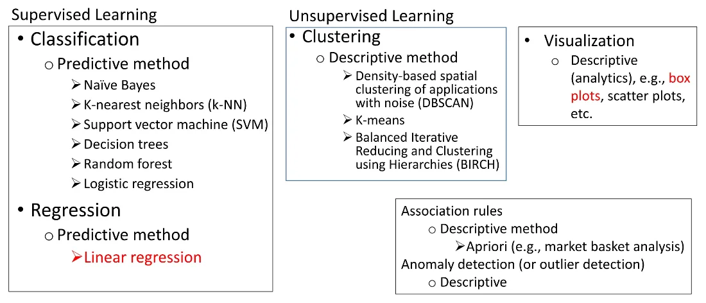
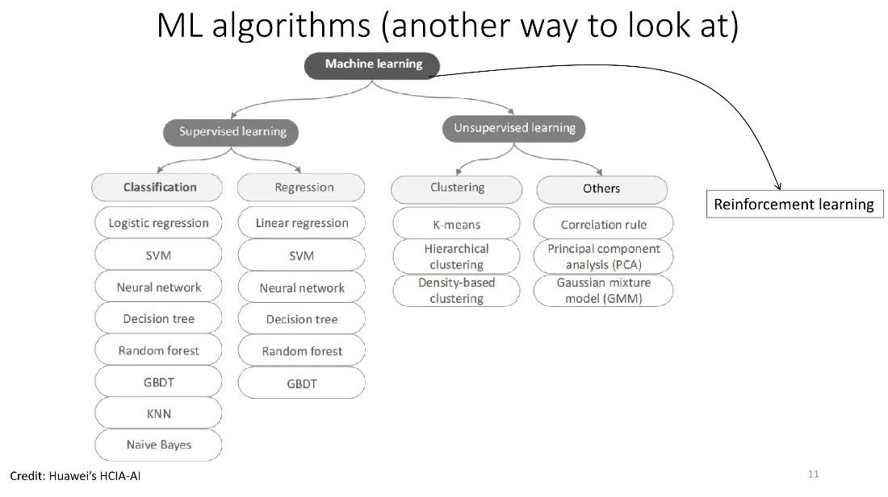
Supervised vs Unsupervised vs Reinforcement (จาก transcript)
- Supervised = การเรียนรู้แบบมีผู้สอน คือมีการใส่ label ให้ เช่นบอกว่าดอกที่มีกลีบกว้างยาวประมาณนี้คือสายพันธุ์ A — ต้องมีตัวแปร y
- Unsupervised = ไม่ใส่ label ไม่มีตัวแปร y ปล่อยให้เรียนรู้เอง เช่นการจัดกลุ่ม (clustering) ตัวอย่างที่ง่ายที่สุดคือ k-means โดย k คือจำนวนกลุ่ม (เป็น hyperparameter) และ mean คือ centroid หรือจุดศูนย์กลางของแต่ละกลุ่ม — เปรียบเทียบกับให้นักศึกษาทั้งห้องจับกลุ่มกันเองโดยดูจากลักษณะที่ใกล้เคียงกัน ไม่มีใครบอกว่าใครควรอยู่กลุ่มไหน
- ใน clustering ไม่มีเกณฑ์ตายตัวว่าอะไรผิดอะไรถูก จะได้ 3 กลุ่มหรือ 4 กลุ่มก็ไม่ผิด ดูแค่ว่าอันไหนดีกว่ากันเท่านั้น
- Reinforcement learning = เรียนรู้จากการลองผิดลองถูก มี reward เมื่อทำได้ดีและมีการลงโทษเมื่อทำผิด พร้อม feedback ตัวอย่างคือการเล่นเกมหมากรุก เกมโกะ หรือหุ่นยนต์ที่เรียนรู้การเดินหลบสิ่งกีดขวาง
Gen AI ใช้ทั้งสามแบบผสมกัน (จาก transcript)
- Pre-training แบบ unsupervised — เก็บข้อมูลมหาศาลทั้งตำรา บทความ โค้ด จากทั่วโลกมาเทรน
- Supervised — ป้อนคู่คำถาม-คำตอบเข้าไปให้โมเดลเรียนรู้
- Reinforcement — ใช้หลายโมเดลพร้อมกันแล้วให้ feedback ว่าโมเดลไหนตอบดีกว่า ให้คะแนนมากกว่า แล้วโมเดลเอาไปเรียนรู้ต่อ
Predictive vs Descriptive model
โมเดลที่ได้จากขั้น data mining แบ่งเป็นสองประเภท
| ประเภท | เป้าหมาย |
|---|---|
| Predictive model | ทำนายค่าของตัวแปรหนึ่งจากตัวแปรที่เหลือ — ตัวที่จะทำนายเรียก dependent / target variable ตัวที่ใช้ทำนายเรียก independent / predictor variable |
| Descriptive model | ระบุความสัมพันธ์ระหว่างตัวแปร เพื่อเรียนรู้โครงสร้างของข้อมูลให้มากขึ้น |
(จาก transcript) ตัวอย่าง predictive: รถยี่ห้อนี้ เป็นซีดาน แรงม้าเท่านี้ สีดำ ราคาน่าจะประมาณเท่าไหร่ / คอนโดชั้น 20 เขตนี้ ขนาดกี่ตารางเมตร ราคาเท่าไหร่ ส่วน descriptive คือแค่แสดงให้เห็นว่าเจออะไร
07 ประเภทของข้อมูลและมาตรวัด
ประเภทของตัวแปร
ตัวแปร
┌──────────────┴──────────────┐
Categorical Numerical
(Qualitative) (Quantitative)
┌────┴────┐ ┌────┴────┐
Nominal Ordinal Discrete Continuous
| ประเภท | ลักษณะ | ตัวอย่าง |
|---|---|---|
| Discrete | ตัวเลขที่แยกกันชัดเจน มี step size | จำนวนประชากร, จำนวนเหรียญในกระเป๋า |
| Continuous | ไม่จำกัดด้วย step ไม่จำกัดจำนวนตำแหน่งทศนิยม (แต่มักปัดที่ตำแหน่งใดตำแหน่งหนึ่ง) | ปริมาณน้ำในแก้ว, ค่าจริงจาก 0 ถึง 1, น้ำหนัก, ส่วนสูง |
| Nominal | บอกคุณลักษณะ ใส่ตัวเลขแทนได้แต่เอามาเปรียบเทียบเชิงคณิตศาสตร์ไม่ได้ | เพศ, เชื้อชาติ, เมือง, ยี่ห้อสินค้า |
| Ordinal | กึ่งตัวเลขกึ่งประเภท เปรียบเทียบได้แต่ไม่ตรงไปตรงมา ต้องมี data point เยอะถึงจะเทียบได้อย่างมีความหมาย | ดาวรีวิวโรงแรม 1–5 ดาว, ระดับการศึกษา, เกรด A B C D F |
(จาก transcript) ตัวอย่างที่น่าสนใจ: เบอร์เสื้อนักกีฬา เช่นเบอร์ 8, 10, 23 — เป็นตัวเลขก็จริง แต่เป็นแค่ สัญลักษณ์ ไม่ได้บอกว่าใครดีกว่าใคร จึงเป็น nominal ไม่ใช่ตัวเลข → ถ้าเห็นตัวเลขอย่าเพิ่งด่วนสรุป ต้องดูวัตถุประสงค์และบริบทของการใช้งานด้วย
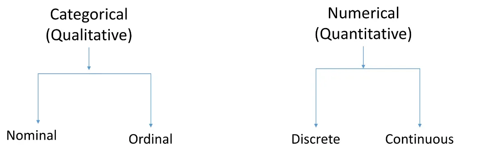
Scales of measurement
มองข้อมูลตัวเลขในอีกมุมหนึ่ง คือมุมของ การวัด
| Scale | คุณสมบัติ | ตัวอย่าง |
|---|---|---|
| Nominal | แค่ระบุประเภท | blood type, zip/area code, gender, race, eye color, political party |
| Ordinal | มีลำดับ | socio-economic status (low/middle/high income), education level (high school, BS, MS, PhD), satisfaction rating |
| Interval | ไม่มีศูนย์แท้จริง หาผลต่างได้ ผลต่างเท่ากันหมายถึงระยะเท่ากัน | temperature (°F, °C), pH, TOEFL score (310-677), standardized exam score, ปี ค.ศ., ปี พ.ศ. |
| Ratio | มีศูนย์แท้จริง (true zero) หาอัตราส่วน "กี่เท่า" ได้ | dose amount, flow rate, concentration, pulse, weight, length, temperature ในหน่วย Kelvin (0.0 K = ไม่มีความร้อนเลย = −273.15 °C) |
(จาก transcript) วิธีจำ
- True zero แปลว่าถ้าค่าเป็นศูนย์คือ ไม่มีค่านั้นอยู่เลยจริง ๆ — 0 กิโลกรัมคือไม่มีน้ำหนัก, 0 บาทคือไม่มีเงิน, 0 Kelvin คือไม่มีพลังงานความร้อน
- 0 °C ไม่ใช่ ศูนย์แท้จริง เพราะยังมีพลังงานความร้อนอยู่ เป็นแค่ตัวเลขที่มนุษย์สมมติขึ้น
- ผลที่ตามมา: 50 °C ไม่ได้ร้อนเป็น 2 เท่าของ 25 °C แต่ 100 K ร้อนเป็น 2 เท่าของ 50 K ได้ เพราะมีฐานเดียวกันคือศูนย์แท้จริง
- ปี ค.ศ./พ.ศ. ไม่มีศูนย์แท้จริง (เป็นจุดที่ตกลงกันว่าจะเริ่มนับ) → ปี 2000 ไม่ได้ "เป็น 2 เท่า" ของปี 1000
- คะแนนสอบมาตรฐานอย่าง TOEFL ไม่มีศูนย์แท้จริง เพราะถึงทำผิดหมดก็ยังมีคะแนนตั้งต้นให้
- Interval เน้นที่ ผลต่าง ถ้าผลต่างเป็นเลขเท่ากันก็ต้องหมายถึงระยะเท่ากัน เช่น pH 7.8 กับ 9.8 ห่างกัน 2 หน่วย เท่ากับ pH 0.9 กับ 2.9 ที่ห่างกัน 2 หน่วยเหมือนกัน
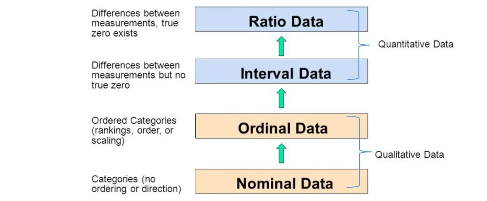
08 การแจกแจงข้อมูล และค่ากลางสามตัว
สามค่ากลาง
| ค่า | ความหมาย | ข้อดี/ข้อเสีย | ตัวอย่างการใช้ |
|---|---|---|---|
| Mean (ค่าเฉลี่ย) | ค่าเฉลี่ยที่เรารู้จักกัน | เข้าใจง่าย คิดจากข้อมูลทุกตัว แต่ ถูก outlier ดึง | คะแนนสอบของห้อง, เวลาขับรถกลับบ้านโดยเฉลี่ย |
| Median (มัธยฐาน) | ค่าตรงกลางหลังเรียงลำดับแล้ว | ไม่บอกอะไรมากเกี่ยวกับข้อมูลส่วนที่เหลือ | รายได้ครัวเรือนของประเทศ |
| Mode (ฐานนิยม) | ค่าที่พบบ่อยที่สุด = จุดยอดของ histogram | ไม่บอกอะไรมากเกี่ยวกับข้อมูลส่วนที่เหลือ | รายได้ของพนักงานในบริษัท |
สไลด์เน้นว่า ไม่มีตัวไหนดีที่สุด แต่การใช้แค่ตัวเดียวเป็นความคิดที่ไม่ดี
รูปทรงการแจกแจง (จาก transcript)
- Normal distribution — สมมาตร (symmetric) ซ้ายขวาเท่ากัน รูปทรงเหมือน ระฆังคว่ำ (bell shape) ในกรณีนี้ mean, median และ mode มาอยู่จุดเดียวกัน
- แกน y ของ histogram คือ ความถี่ (frequency) = จำนวนครั้งที่เกิด ดังนั้นจุดยอดคือ mode เสมอ
- Skew (เบ้) — ถ้ามีค่า extreme ทางขวา ค่าจะถูกดึงไปทางขวา เรียก positive skew; ถ้าเบ้ซ้ายเรียก negative skew
- Mean ถูกดึงไปทางหางเสมอ ส่วน median อยู่ระหว่าง mode กับ mean
- ตัวอย่างการดึง: คนทั่วไปสูงราว 1.7–1.8 เมตร ถ้ามีบางคนสูง 2 เมตรกว่า ก็จะดึงค่าเฉลี่ยไปทางขวา / คนที่มีรายได้สูงมาก ๆ ดึงรายได้เฉลี่ยของทั้งกลุ่มขึ้นไป
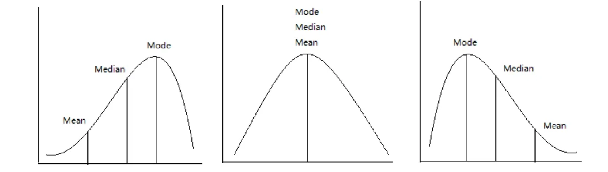
Statistical summary / aggregate data
ค่าสรุปทางสถิติ เช่น min, max, mean, median, mode — (จาก transcript) บางทีเรียก aggregate data เพราะเป็นค่าที่ผ่านการรวบรวมและ process มาแล้ว (เช่นต้องบวกกันก่อนแล้วหารด้วยจำนวน)
09 Box plot (Box and Whisker Plot)
Box plot บอกอะไรได้บ้าง
- การกระจายตัว (dispersion / variability / scatter / spread) ของข้อมูล
- ความเบ้ (skewness) ถ้ามี
- quartiles
- outliers ถ้ามี
- ใช้ เปรียบเทียบระหว่างกลุ่ม ได้
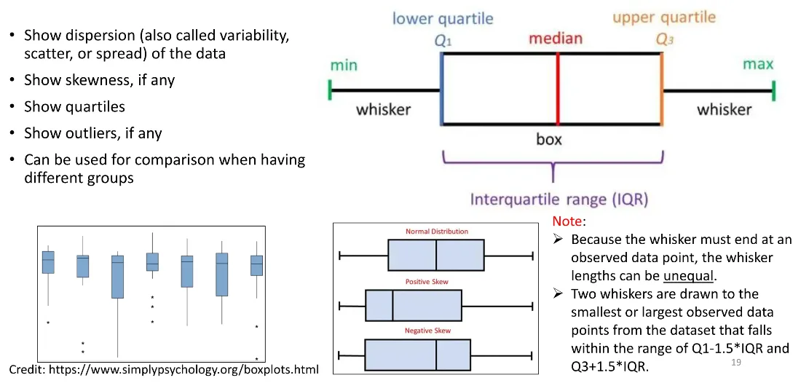
Five-number summary
| สัญลักษณ์ | ความหมาย |
|---|---|
| min | ค่าน้อยสุดที่อยู่ในรั้ว |
| Q1 | เปอร์เซ็นไทล์ที่ 25 |
| Q2 | เปอร์เซ็นไทล์ที่ 50 = median |
| Q3 | เปอร์เซ็นไทล์ที่ 75 |
| max | ค่ามากสุดที่อยู่ในรั้ว |
(จาก transcript) Q ย่อมาจาก quartile — รู้ 5 ค่านี้ก็วาดกล่องได้เลย
IQR และรั้ว (fences)
IQR = Q3 − Q1 ← ความยาวของกล่อง
รั้วล่าง = Q1 − 1.5 × IQR
รั้วบน = Q3 + 1.5 × IQR
- whisker (หนวด) ต้องจบที่ จุดข้อมูลจริง เสมอ — ลากไปถึงจุดที่ไกลจากกล่องที่สุดแต่ยัง อยู่ในรั้ว ไม่ใช่ลากไปถึงตัวรั้ว ดังนั้น ความยาวหนวดสองข้างไม่จำเป็นต้องเท่ากัน
- จุดที่อยู่นอกรั้ว = outlier ค่า min/max ที่นับในกล่องจะไม่รวม outlier
- Q2 อยู่ในกล่องแต่ไม่จำเป็นต้องอยู่ตรงกลาง เพราะข้อมูลอาจเบ้ซ้ายหรือขวา
- แต่ละช่วงของ box plot แทนข้อมูล 25% เท่ากันหมด (4 ช่วง)
- วาดแนวตั้งหรือแนวนอนก็ได้ ไม่ต่างกัน แค่เปลี่ยนมุมมอง
- ค่า 1.5 ใน Orange เป็น default ที่ปรับได้
(จาก transcript) วิธีจัดการ outlier: จะทิ้งก็ได้ แต่ต้องหาเหตุผลว่าทำไมมันสุดโต่ง อาจแยกวิเคราะห์กลุ่มที่ extreme ออกจากกลุ่มทั่วไป เพราะถ้าไม่ทำ ภาพรวมของข้อมูลจะเสีย — เช่นในห้องมีเพื่อนสูง 2 เมตรกว่าอยู่ 2-3 คน ก็แยกวิเคราะห์ต่างหาก
ข้อดีที่เหนือกว่า histogram (จาก transcript) — เห็นการแจกแจงได้โดยไม่ต้อง plot ทั้ง distribution และ เปรียบเทียบหลายกลุ่มพร้อมกันได้ทันที
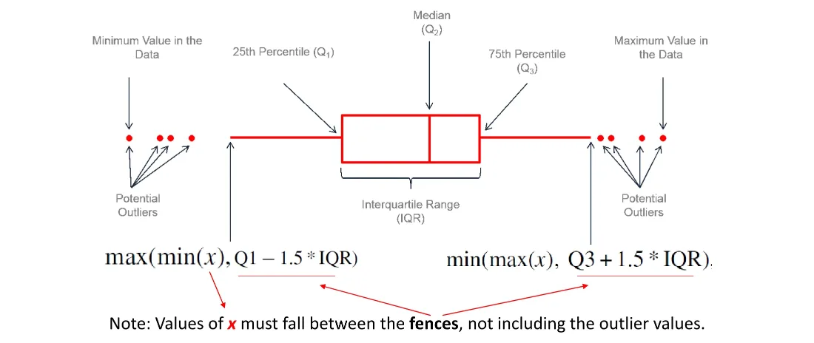
ตัวอย่างใน Orange: Iris
พล็อต box plot ของความกว้างกลีบดอก (petal width) แยกตามสายพันธุ์ (setosa / versicolor / virginica) แล้วเห็นชัดว่า สามสายพันธุ์ต่างกันชัดเจน จึงสรุปได้ว่า feature นี้เอาไปใช้ classify สายพันธุ์ได้ — นี่คือตัวอย่างของการทำ EDA ก่อนวิเคราะห์ขั้นถัดไป
10 Scatter plot และ Correlation
Scatter plot
- แสดง ทุก data point
- แสดงว่าข้อมูล หนาแน่นหรือเบาบาง แค่ไหน
- แสดง correlation และ trend ถ้ามี
(จาก transcript) คำว่า scatter แปลว่ากระจัดกระจาย เหมือนการหว่านเมล็ดพืช — trend คือแนวโน้มขาขึ้นหรือขาลง เช่นถ้ารถคันใหญ่ขึ้นราคาก็แพงขึ้น
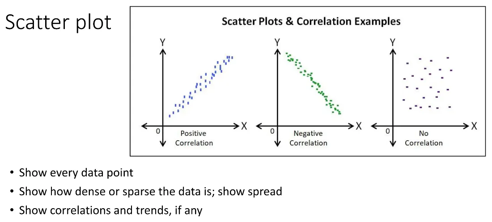
Correlation (สหสัมพันธ์)
-1 ≤ r ≤ 1
| ค่า r | ความหมาย |
|---|---|
| +1 | สัมพันธ์เชิงบวกแบบสมบูรณ์ จุดเรียงเป็นเส้นตรงขึ้น |
| 0 | ไม่มีความสัมพันธ์ จุดกระจายทั่ว |
| −1 | สัมพันธ์เชิงลบแบบสมบูรณ์ จุดเรียงเป็นเส้นตรงลง |
| วิธี | ใช้กับ | เงื่อนไข |
|---|---|---|
| Pearson correlation | ข้อมูล numerical | เฉพาะความสัมพันธ์ เชิงเส้น (linear) เท่านั้น |
| Spearman correlation | ข้อมูล ordinal scale (ลำดับ) | ความสัมพันธ์แบบ monotonic/linear |
(จาก transcript) สูตรคำนวณอยู่บนพื้นฐานของการเอาค่าแต่ละตัวลบด้วยค่าเฉลี่ยของแกนตัวเอง (x̄, ȳ) แล้วคูณกัน — ตัวเศษเป็นบวกหรือลบก็ได้ แต่ตัวส่วนมีรากที่สองจึงเป็นบวกเสมอ ผลลัพธ์จึงอยู่ในช่วง −1 ถึง 1 (อาจารย์บอกว่าไม่ต้องท่องสูตร)
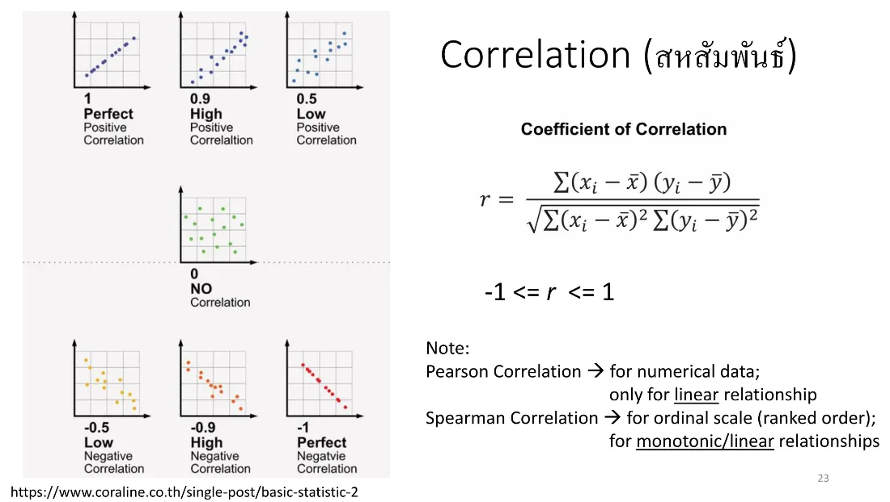
11 Linear Regression
Linear modeling ตอบคำถามอะไร
“x มีอิทธิพลต่อ y หรือไม่” เช่น
- ราคาบ้านได้รับอิทธิพลจากรายได้หรือเปล่า
- การเปลี่ยนถ่ายน้ำมันเครื่องบ่อยขึ้นเป็นเรื่องดีไหม ประหยัดเงินในระยะยาวหรือเปล่า
⚠️ คำเตือนคลาสสิกของนักสถิติที่สไลด์ยกมา: “Correlation does not mean causation.”
เงื่อนไขของตัวแปร
- target variable ต้องเป็นตัวเลขเสมอ เช่นปริมาณน้ำฝนของวัน, ราคารถ
- predictor variable เป็นได้ทั้ง numerical, categorical หรือ ordinal
- ถ้า target เป็น categorical (เช่นพยากรณ์อากาศ sunny/cloudy/rain/snow) ก็ยังใช้ threshold มาแบ่ง (quantization) เพื่อ classify ได้ แต่โดยทั่วไป logistic regression (ที่อยู่บนพื้นฐานของความน่าจะเป็น) เหมาะกว่า
สมการ
โมเดลเชิงเส้น: y = f(X, w) โดย x คือตัวแปรต้น y คือ target, f() คือฟังก์ชันเชิงเส้น และ w คือชุด parameter
Simple linear regression (การวิเคราะห์การถดถอยเชิงเส้น) — 1 ตัวแปรต้น
y = w₀ + w₁x + ε
โดย w₀ = intercept, w₁ = slope, ε = error หรือ residual
(จาก transcript) คำว่า linear หมายถึงดีกรี (เลขยกกำลัง) มีแค่ 0 กับ 1 เท่านั้น ถ้าดีกรี 2 ขึ้นไปจะเรียก polynomial (ดีกรี 2 = quadratic, ดีกรี 3 = cubic) เช่น w₀ + w₁x₁ + w₂x₂² + w₃x₃³ + … — วิชานี้ใช้แค่แบบ linear
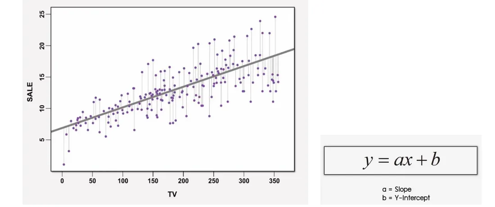
ทำไมชื่อ "regression" (การถดถอย) (จาก transcript)
มีเส้นตรงที่ลากผ่านข้อมูลได้เป็นล้านเส้น อัลกอริทึมจะถามไปทีละเส้นว่าเส้นนี้ดีพอไหม แล้วเลือกเส้นที่ error น้อยที่สุด เส้นเดียว — "การถดถอย" ในที่นี้คือ error ถดถอยลงเรื่อย ๆ จนได้เส้นที่ดีที่สุด
Loss function และการหาค่า w
- error นิยามเป็น ระยะห่างระหว่าง data point กับเส้น ยกกำลังสอง (squared distance) แล้วบวกรวมกันทุกจุด
- loss function ที่นิยมที่สุดสำหรับ regression คือ least squares method
- วิธีหา w ที่ดีที่สุด: หาอนุพันธ์ (derivative) ของ loss function แล้วตั้งให้เท่ากับศูนย์ แล้วแก้สมการ
- ฟังก์ชันเป้าหมายเรียก cost function หรือ objective function ที่ตั้ง goal ว่าจะ minimize มัน — คำตอบคือ argmin = อาร์กิวเมนต์ที่ทำให้ฟังก์ชันเป้าหมายมีค่าน้อยที่สุด
(จาก transcript) หลักการนี้เป็นหลักการเดียวกับที่ deep learning และ machine learning ใช้ — หา error ที่น้อยที่สุดเพื่อให้ได้ค่า weight ที่ดีที่สุด ต่างกันแค่ของเรามี weight 2 ตัว ส่วนของ Gen AI มีเป็นล้าน ๆ ตัว
สองขั้นตอนของการใช้โมเดล
| ขั้น | ทำอะไร |
|---|---|
| Model Fitting | มี dataset ที่มีตัวแปร x₁…x_m และ y แล้วคำนวณหา w ที่ดีที่สุดตามเกณฑ์ที่กำหนด |
| Model Prediction | มี predictor x₁…x_m และ w แล้วคำนวณค่า y ออกมา |
Simple vs Multiple
| จำนวนตัวแปรต้น | |
|---|---|
| Simple linear regression | 1 ตัว |
| Multivariate / Multiple linear regression | มากกว่า 1 ตัว |
Multiple linear regression ใช้ดูว่าตัวแปรต้นหลายตัวส่งผลต่อ target อย่างไร โดย สังเกตผลของการเปลี่ยนตัวแปรต้นตัวหนึ่งขณะที่คุมค่าตัวอื่นไว้
(จาก transcript) ใส่ตัวแปรต้นเพิ่มได้เรื่อย ๆ แต่เยอะเกินไปก็ไม่ดี ประมาณ 4–5 ตัวก็เริ่มวุ่นวายแล้ว ปกติใช้ 2–3 ตัวก็พอเห็นความสัมพันธ์ที่ใช้ได้จริง
12 อ่านผลลัพธ์ของโมเดล
ผลลัพธ์จาก lm() ใน R (lm = linear model) มีสิ่งที่ต้องอ่านให้เป็น
Coefficients
แต่ละบรรทัดคือ weight ของตัวแปรนั้น ๆ โดยบรรทัด (Intercept) คือ w₀
ดาว (significance codes) — จาก t-test
| ดาว | ระดับ p-value |
|---|---|
*** | 0.001 (0.1%) |
** | 0.01 (1%) |
* | 0.05 (5%) |
- t-test บอกว่า ตัวแปรเดี่ยว ๆ ตัวนั้นมีนัยสำคัญทางสถิติหรือไม่
- F-test บอกว่า กลุ่มตัวแปรร่วมกัน มีนัยสำคัญหรือไม่ (ยิ่งค่ามากยิ่งดี) และดู p-value ประกอบเพื่อเห็นภาพรวม
- กฎง่าย ๆ:
Pr(>|t|)หรือ p-value น้อยกว่า 0.05 ถือว่ามีนัยสำคัญทางสถิติ
(จาก transcript) ยิ่ง error น้อยยิ่งดี — 3 ดาวดีที่สุด มีตั้งแต่ 1 ดาวขึ้นไปถือว่าใช้ได้ ถ้าไม่มีดาวเลยแปลว่าตัวแปรนั้นใช้ทำนายได้ไม่ดี ไม่ต้องเอามาใช้ ในงานที่ไม่ใช่เรื่องเป็นเรื่องตาย error 5% ยอมรับได้
R, R² และ Adjusted R²
| ค่า | ความหมาย |
|---|---|
| R | correlation |
| R² | coefficient of determination (CD) — บอกว่าข้อมูลฟิตกับเส้น/เส้นโค้งได้ดีแค่ไหน มีค่า 0 ถึง 1 ถ้าเป็น 1.0 แปลว่าชุดตัวแปร X ทำนาย Y ได้อย่างสมบูรณ์แบบ |
| Adjusted R² | ปรับโทษการเพิ่มตัวแปรมั่ว ๆ — ถ้าเพิ่มตัวแปรที่ไม่มีประโยชน์ adjusted R² จะลดลง ถ้าเพิ่มตัวแปรที่มีประโยชน์จะเพิ่มขึ้น และ adjusted R² ≤ R² เสมอ |
(จาก transcript) เกณฑ์คร่าว ๆ ที่อาจารย์ให้: R² ตั้งแต่ 0.6 ขึ้นไปถือว่าดี (0.5 ก็พอได้) ส่วน R ควรมากกว่า 0.8 ขึ้นไป (0.8² ≈ 0.64) — เหตุผลที่ต้องใช้ adjusted R² คือ R มีแนวโน้มเพิ่มขึ้นเรื่อย ๆ เมื่อใส่ตัวแปรต้นเพิ่ม ทำให้ปั้นค่าสูง ๆ ขึ้นมาได้แบบไม่จริง เวลาเปรียบเทียบโมเดลที่ซับซ้อนไม่เท่ากันจึงต้องดู adjusted R²
13 ตัวแปรเชิงประเภทในสมการ
ตัวอย่างจากสไลด์ (multivariate ล้วนตัวเลข):
Price = 58.35 × Horsepower + 110.13 × Length + 101.45 × EngineSize − 24,836.65
ตัวอย่างที่มีตัวแปรเชิงประเภท (ยี่ห้อรถ) — สไลด์ยกกรณี BMW:
Price = 64.38 × Horsepower + 57.07 × EngineSize + 1.0 × 8,062.71 − 408.06
กติกา — ใช้ยี่ห้อเดียวต่อการทำนายหนึ่งครั้ง โดย คูณ 1.0 กับสัมประสิทธิ์ของยี่ห้อที่เลือก และคูณ 0.0 กับยี่ห้ออื่นทั้งหมด (ที่คูณ 0 ก็คือไม่ต้องเอามารวมนั่นเอง)
ในโค้ดตัวอย่าง LinearReg_auto.R ใช้หลักเดียวกันกับ Porsche และ Mitsubishi:
# Porsche: hp=150, es=100, bd="porsche", intercept = -408.062
pred_price = 64.381*150 + 57.068*100 + 1.0*9054.119 - 408.062
# Mitsubishi: hp=150, es=100, bd="mitsubishi"
pred_price = 64.381*150 + 57.068*100 + 1.0*(-3804.304) - 408.062
(จาก transcript) ย้ำอีกครั้งว่า y ต้องเป็นตัวเลขเสมอ ไม่ว่าจะ simple หรือ multiple ส่วน x ผสมกันได้ทั้งตัวเลข (แรงม้า) และประเภท (ยี่ห้อ ซึ่งเป็น nominal ไม่ใช่ ordinal เพราะเทียบไม่ได้ว่ายี่ห้อไหนอยู่เหนือใคร) — และเวลาดูผลจะเห็นว่าบางยี่ห้อได้ 3 ดาว บางยี่ห้อไม่ได้ดาวเลย (เช่นยี่ห้อที่มีข้อมูลน้อย) แปลว่ายี่ห้อนั้นใช้ทำนายได้ไม่ค่อยดี
14 ลงมือ: R และ RStudio
ต้องลง R (compiler/interpreter) ก่อน แล้วค่อยลง RStudio จากนั้นตั้ง working directory ให้ตรงกับที่เก็บไฟล์ — ใน RStudio วาง cursor ไว้ที่บรรทัดแล้วกด Run จะรันทีละ statement หรือเลือกหลายบรรทัดรันพร้อมกันก็ได้
โค้ดทั้งหมดอยู่ที่ ../code/LinearReg_auto.R และข้อมูลที่ ../code/imports-85.data
อ่านข้อมูลและสำรวจโครงสร้าง
# dataset นี้ไม่มี header และบางระบบแปลง char เป็น factor อัตโนมัติ จึงต้องปิดไว้
auto <- read.csv("data/imports-85.data", header = FALSE, stringsAsFactors = FALSE)
dim(auto) # จำนวน row และ column → 205 x 26
str(auto) # โครงสร้าง: แต่ละคอลัมน์เป็นชนิดอะไร
names(auto) # ชื่อคอลัมน์ (default เป็น V1, V2, ...)
ตั้งชื่อคอลัมน์
# ตั้งชื่อทุกคอลัมน์พร้อมกันด้วยฟังก์ชัน c() (combine)
names(auto) <- c("symbol","nloss","make","fuel","aspiration",
"doors","body","wheels","engineloc","wheelbase",
"length","width","height","weight","enginetype",
"cylinders","enginesize","fuelsys","bore",
"stroke","compressratio","horsepower","rpm",
"citympg","hwmpg","price")
# หรือเปลี่ยนทีละตัวด้วย index
names(auto)[22] <- "Horsepower"
names(auto)[26] <- "Price"
names(auto)[3] <- "Brand"
names(auto)[7] <- "BodyStyle"
names(auto)[17] <- "EngineSize"
จัดการ missing data
# dataset นี้แทน missing ด้วย '?'
which(auto$Horsepower == '?')
which(auto$Price == '?')
sort(auto$Horsepower) # ยังไม่เรียงถูก เพราะยังเป็น character
# แปลงเป็นตัวเลข — '?' จะถูก coerce เป็น NA
auto$Horsepower <- as.numeric(auto$Horsepower)
sort(auto$Horsepower, decreasing = TRUE) # NA จะไม่แสดง
which(is.na(auto$Horsepower)) # หา index ของ NA
auto <- na.omit(auto) # ตัดแถวที่มี NA ทิ้ง
(จาก transcript) ข้อสังเกตสำคัญ — ตอนที่ Horsepower ยังเป็น string การ sort() จะเรียงตามตัวอักษร ทำให้ "100" มาก่อน "62" ต้องแปลงเป็นตัวเลขก่อนถึงจะเรียงถูก และ $ คือวิธีเข้าถึงคอลัมน์ใน data frame (ชื่อ_data_frame$ชื่อคอลัมน์)
สถิติเบื้องต้น
min(auto$Horsepower, na.rm = TRUE) # na.rm = TRUE คือไม่นับ NA
max(auto$Horsepower, na.rm = TRUE)
range(auto$Horsepower, na.rm = TRUE)
mean(auto$Horsepower, na.rm = TRUE)
median(auto$Horsepower, na.rm = TRUE)
summary(auto$Horsepower) # ให้ min, Q1, median, mean, Q3, max ในคำสั่งเดียว
# R ไม่มีฟังก์ชัน mode ในตัว — ใช้ตารางความถี่แทน
table(auto$Horsepower)
sort(table(auto$Horsepower))
(จาก transcript) summary() ให้ 5 ค่าคล้าย box plot บวก mean มาให้ด้วย แต่ไม่ใช่ box plot ส่วน table() ทำให้เห็น mode — ในคาบพบว่าแรงม้า 68 เกิดขึ้นบ่อยที่สุดคือ 19 ครั้ง ส่วนแรงม้า 48 มีแค่ค่าเดียว
Visualization
# Histogram
hist(auto$Horsepower, col = "lightgray")
hist(auto$Horsepower, xlab = "Horsepower", breaks = seq(0,300,10),
col = "yellow", main = "Histogram of horsepower (205 cars)")
# Box plot แนวตั้ง / แนวนอน
boxplot(auto$Horsepower, main = "205 Cars from the 1985 Automobile Dataset",
ylab = "Horsepower", col = "orange")
boxplot(auto$Horsepower, horizontal = TRUE, xlab = "Horsepower", col = "lightyellow")
# Box plot แยกตามกลุ่มย่อย — สังเกตเครื่องหมาย ~
boxplot(auto$Horsepower ~ auto$BodyStyle, col = "lightgreen",
ylab = "HP", xlab = "Body Style", main = "Horsepower vs. Body Styles")
# เพิ่มจุดค่าเฉลี่ยของแต่ละกลุ่มลงบน box plot
means <- tapply(auto$Horsepower, auto$BodyStyle, mean)
points(means, pch = 19, cex = 1.2, col = 'red') # pch = plot character, cex = scale
# Scatter plot
plot(auto$Horsepower, auto$Price, xlab = "Horsepower", ylab = "Price ($)",
main = "205 Cars from the 1985 Ward's Automotive Yearbook", col = "blue")
(จาก transcript) จาก box plot ของ horsepower เห็น outlier 4 จุด ที่สุดโต่ง และ box plot แยกตาม body style ทำให้เปรียบเทียบกลุ่มย่อยได้ทันที เช่นเห็นว่า wagon ค่อนข้างปกติ ส่วน convertible กับ hardtop ดูเพี้ยนไป (Q1 กับ Q2 ชิดกันมาก) — histogram แบบ default อาจดูไม่สวย ต้องปรับ breaks เพื่อกำหนดขนาดของ bin (ตะกร้า) ว่าช่วงค่านี้มีข้อมูลตกลงมากี่ครั้ง
Pairs plot — ดูหลายคู่พร้อมกัน
pairs(data = auto, ~ auto$Price + auto$Horsepower + auto$EngineSize,
col = "blue", main = "Automobile dataset")
# แบบใส่เส้น regression ให้ทุกคู่
panel.lm <- function(x, y){
points(x, y, col = "blue")
abline(lm(y ~ x), col = 'red')
}
pairs(data = auto, ~ Price + Horsepower + EngineSize + height + citympg,
panel = panel.lm, main = "Pairs function of some chosen variables")
(จาก transcript) เวลาอ่าน pairs plot ต้องดูให้ดีว่าแกนไหนเป็นแกนไหน เพราะช่องที่อยู่ตรงข้ามกันจะสลับแกน x กับ y กัน ข้อดีคือเห็นความสัมพันธ์ของทุกคู่พร้อมกันทีเดียว
Simple linear regression
modelAuto <- lm(auto$Price ~ auto$Horsepower) # รูปแบบคือ lm(Y ~ X)
coef(modelAuto) # ดูสัมประสิทธิ์
summary(modelAuto) # ดูผลเต็ม พร้อม t-test, R², adjusted R²
# correlation แบบ Pearson โดยไม่นับ NA
cr <- cor(auto$Horsepower, auto$Price, method = "pearson", use = "complete.obs")
cat("Correlation =", cr)
# เพิ่มเส้น regression ลงบน scatter plot ที่พล็อตไว้ก่อนหน้า
abline(modelAuto, col = "red")
ผลที่ได้ในคาบ — สมการที่อาจารย์เขียนออกมาคือ
Price = -4562.175 + 172.206 × Horsepower
(ยืนยันแล้วโดยคำนวณซ้ำจาก imports-85.data เอง: 199 แถวที่มีทั้ง horsepower และ price → intercept −4562.175, slope 172.206, r = 0.8105, R² = 0.657 ซึ่งตรงกับค่า r = 0.81 ที่ Orange แสดงในคาบสัปดาห์ที่แล้ว)
Prediction
# ตั้งชื่อตัวแปรใหม่แล้วสร้างโมเดลอีกครั้ง
pr <- auto$Price
hp <- auto$Horsepower
modelPr <- lm(pr ~ hp)
# data frame ที่ใส่ค่าทดสอบ ต้องใช้ "ชื่อตัวแปรเดียวกัน" กับตอน train
predData <- data.frame(hp = c(0, 200, 100, 250))
predict(modelPr, predData)
Multiple linear regression
multivModel <- lm(auto$Price ~ auto$Horsepower + auto$EngineSize)
coef(multivModel)
summary(multivModel)
# หลาย plot ในภาพเดียว
par(mfrow = c(1,2)) # c(nrows, ncolumns)
# ... plot ...
par(mfrow = c(1,1)) # reset
เพิ่มตัวแปรเชิงประเภท
# ต้องแปลง character เป็น factor ของ R ก่อน
auto$Brand <- as.factor(auto$Brand)
str(auto) # เช็คว่าเปลี่ยนแล้ว
multivModel <- lm(auto$Price ~ auto$Horsepower + auto$EngineSize + auto$Brand)
summary(multivModel)
# ทำนายโดยใส่ค่าเชิงประเภทเข้าไปตรง ๆ
pr <- auto$Price; hp <- auto$Horsepower
es <- auto$EngineSize; bd <- auto$Brand
modelPr <- lm(pr ~ hp + es + bd)
predData <- data.frame(hp = c(150,150), es = c(100,100),
bd = c("porsche","mitsubishi"))
predict(modelPr, predData)
15 เทียบผลระหว่าง Orange กับ R
ในคาบเปิด Orange workspace Linear Regression (Imports-1985 dataset).ows ทำโมเดลเดียวกัน (target = price, feature = horsepower + brand + body style) แล้วเทียบสัมประสิทธิ์กับที่ได้จาก R
ผลคือใกล้เคียงกันแต่ไม่เท่ากันเป๊ะ — สัมประสิทธิ์ของ horsepower ได้ราว 105 ใน Orange เทียบกับ 109.64 ใน R อาจารย์อธิบายว่าน่าจะเกิดจาก default ของการ preprocess/scaling ที่ต่างกันระหว่างสองซอฟต์แวร์ สรุปคือ ใช้ Orange เป็นตัวตรวจทานผลของ R ได้
(ตัวเลขในหัวข้อนี้ถอดมาจาก transcript ที่คุณภาพต่ำ อาจคลาดเคลื่อน — ให้ยึดค่าที่รันได้จริงในเครื่องตัวเอง)
ใน Orange ต้องทำ Edit Domain ตั้งชื่อคอลัมน์ก่อน แล้ว Select Columns เลือก feature กับ target — สังเกตว่า index ของ Orange เริ่มที่ x0 ส่วนของ R เริ่มที่ V1 ดังนั้นคอลัมน์เดียวกันจะเป็น 25 ใน Orange แต่เป็น 26 ใน R
16 งานที่สั่ง
Exercise 2 — Multiple linear regression บน imports-85
| หัวข้อ | รายละเอียด |
|---|---|
| ทำใน | ทั้ง R (RStudio) และ Orange เปรียบเทียบผลกัน |
| Dataset | imports-85 (Automobile) ชุดเดียวกับที่ใช้ในคาบ |
| Target (y) | Price |
| Predictor (x) | 3 ตัว — Horsepower, BodyStyle, Brand (make) |
| ต้องส่ง | สมการ + ค่าสัมประสิทธิ์ เป็นอย่างน้อย, capture โค้ดส่วนสำคัญ, ผลการ predict |
| Test case | สร้างเอง 2–3 เคส เช่น Brand = Honda, BodyStyle = sedan, Horsepower = ค่าหนึ่ง แล้ว แทนค่าลงสมการด้วยมือ เทียบกับผลจาก predict() |
| รูปแบบไฟล์ | capture ภาพ → paste ลง Word → save เป็น PDF |
| ทำกับเพื่อนได้ | คุยกับเพื่อนและแชร์กันได้ (เพราะบางคนไม่ได้เอาคอมมา) แต่ แยกส่งเป็นรายคน |
| คะแนน | เป็น คะแนนเก็บ |
| กำหนดส่ง | 18.00 น. ของวันเดียวกัน (พุธ 19 ส.ค.) — คนที่ต้องกลับไปทำที่บ้านขยายได้ถึงเที่ยงคืน (กำหนดนี้เป็นของกลุ่ม 1 — กลุ่ม 2 ต้องยืนยันในคาบตัวเอง) |
(จาก transcript) อาจารย์บอกว่าไม่ต้องพล็อตกราฟส่งก็ได้ เพราะตัวแปรเชิงประเภทอย่าง body style พล็อตเทียบตรง ๆ ไม่ได้ (เกิน 2 มิติ) — ขอแค่สมการกับสัมประสิทธิ์ ส่วนวิธีทำ prediction ถ้าไม่แน่ใจ ให้ดูตัวอย่างในไฟล์ decision tree ที่ส่งไว้ หรือค้น YouTube หรือถาม AI ได้
To-do ที่ฝากไว้ในไฟล์โค้ด
ท้ายไฟล์ LinearReg_auto.R มีโจทย์เขียนไว้ตรงกัน:
Use this Automobile dataset and try to work out on finding some more useful correlation, boxplots, and linear regression, using one more additional variable, which is: body-style (hardtop, wagon, sedan, hatchback, convertible)
งานที่สไลด์หน้าสุดท้ายกำหนดไว้
สไลด์หน้า 40 เขียนโจทย์ไว้อีกชุดหนึ่ง (ยังไม่ได้สั่งเป็นการบ้านในคาบนี้)
ใช้ smartwatch's heart rate dataset ที่แจกในคลาส (หรือเลือก dataset สาธารณะชุดไหนก็ได้) แล้วทำ box plot, histogram (หรือ distribution), scatter plot, หา linear regression (ค่า intercept และ coefficient), หา correlation (r), R-squared และ adjusted R-squared
นำเสนอไอเดียโปรเจกต์ — สัปดาห์หน้า (สัปดาห์ที่ 4)
ทีมละ 3–4 นาที ประมาณ 3 สไลด์ บอกว่าจะทำอะไร ข้อมูลมาจากไหน คาดว่าจะได้อะไร — อ.ชาคริดา จะมาร่วมฟังและให้ comment ด้วย ทีม 4–5 คน (แนะนำ 4 คน)
อภิธานศัพท์ (Glossary)
| คำศัพท์ | ความหมายโดยย่อ |
|---|---|
| OLTP | Online Transaction Processing การประมวลผลธุรกรรมที่เกิดถี่และเร็ว เช่นระบบธนาคารหรือร้านสะดวกซื้อ |
| OLAP | Online Analytical Processing การสำรวจและวิเคราะห์ข้อมูลย้อนหลังจากคลังข้อมูลแบบหลายมิติ |
| EDA | Exploratory Data Analysis การสำรวจข้อมูลเบื้องต้นเพื่อสรุปคุณลักษณะหลักด้วยกราฟและสถิติ เป็นวิธีแบบ non-parametric |
| Univariate | การวิเคราะห์ที่ใช้ตัวแปรเดียว เช่น box plot |
| Bivariate | การวิเคราะห์ที่ใช้สองตัวแปร เช่น scatter plot |
| Multivariate | การวิเคราะห์ที่ใช้ตั้งแต่สามตัวแปรขึ้นไป |
| Modeling | การสร้างตัวแทนอย่างง่ายของระบบหรือกระบวนการ เป็นคำที่กว้างที่สุดในกลุ่มนี้ |
| Data modeling | การสร้างตัวแทนเชิงแนวคิดของข้อมูล เช่น ERD, DFD, UML |
| Data fitting | การหาฟังก์ชันคณิตศาสตร์ที่อธิบายข้อมูลที่มีอยู่ได้ดีที่สุด เช่น least squares, polynomial fitting |
| Model fitting | การปรับ parameter ของโมเดลที่เลือกไว้ให้อธิบายหรือทำนายข้อมูลได้ดีที่สุด โดยเน้นที่ generalization |
| Model parameter | ค่าที่อัลกอริทึมประมาณจากข้อมูลให้เอง เช่น weight หรือสัมประสิทธิ์ |
| Hyperparameter | ค่าที่คนตั้งเองก่อนเทรน เช่น k ใน KNN, learning rate, จำนวน layer, จำนวน epoch |
| Underfitting | โมเดลง่ายเกินไปจนจับ pattern ที่แท้จริงไม่ได้ |
| Overfitting | โมเดลซับซ้อนเกินไปจนเรียนรู้ noise ทำได้ดีกับข้อมูลเทรนแต่แย่กับข้อมูลใหม่ |
| Noise | ส่วนของข้อมูลที่แทรกเข้ามาโดยไม่ต้องการและไม่ก่อประโยชน์ |
| Supervised learning | การเรียนรู้แบบมีผู้สอน คือมีการใส่ label หรือมีตัวแปร y ให้ |
| Unsupervised learning | การเรียนรู้แบบไม่มีผู้สอน ไม่มี label และไม่มีตัวแปร y เช่นการทำ clustering |
| Reinforcement learning | การเรียนรู้จากการลองผิดลองถูกโดยมี reward และการลงโทษเป็น feedback |
| Centroid | จุดศูนย์กลางของแต่ละกลุ่มในการทำ k-means |
| Predictive model | โมเดลที่ทำนายค่าของ target variable จาก predictor variable |
| Descriptive model | โมเดลที่ระบุความสัมพันธ์ระหว่างตัวแปรเพื่อเข้าใจโครงสร้างของข้อมูล |
| Nominal | ข้อมูลเชิงประเภทที่บอกแค่ชนิด เปรียบเทียบลำดับไม่ได้ เช่นเพศหรือยี่ห้อ |
| Ordinal | ข้อมูลเชิงประเภทที่มีลำดับ เช่นดาวรีวิวหรือเกรด |
| Interval | มาตรวัดที่ผลต่างมีความหมาย แต่ไม่มีศูนย์แท้จริง เช่นองศาเซลเซียส ปี ค.ศ. หรือ pH |
| Ratio | มาตรวัดที่มีศูนย์แท้จริงจึงหาอัตราส่วนกี่เท่าได้ เช่นน้ำหนัก ส่วนสูง หรือองศาเคลวิน |
| True zero | จุดศูนย์ที่หมายถึงไม่มีปริมาณนั้นอยู่จริง เป็นเกณฑ์แยก ratio ออกจาก interval |
| Mean | ค่าเฉลี่ยที่คิดจากข้อมูลทุกตัว จึงถูก outlier ดึงได้ง่าย |
| Median | ค่าตรงกลางหลังเรียงลำดับ ตรงกับ Q2 หรือเปอร์เซ็นไทล์ที่ 50 |
| Mode | ค่าที่พบบ่อยที่สุด ตรงกับจุดยอดของ histogram |
| Skewness | ความเบ้ของการแจกแจง เบ้ขวาเรียก positive skew เบ้ซ้ายเรียก negative skew |
| Box plot | กราฟกล่องที่แสดงการกระจาย ความเบ้ quartile และ outlier จากค่าห้าตัว |
| Quartile | ค่าที่แบ่งข้อมูลเป็นสี่ส่วนเท่า ๆ กัน ได้แก่ Q1, Q2 และ Q3 |
| IQR | Interquartile Range เท่ากับ Q3 ลบ Q1 คือความยาวของกล่อง |
| Fence | รั้วที่คำนวณจาก Q1 ลบ 1.5 เท่าของ IQR และ Q3 บวก 1.5 เท่าของ IQR |
| Whisker | หนวดของ box plot ที่ลากไปถึงจุดข้อมูลจริงที่ไกลที่สุดแต่ยังอยู่ในรั้ว |
| Outlier | จุดข้อมูลที่อยู่นอกรั้ว ถือเป็นค่าสุดโต่งที่มักไม่นำมาใช้ |
| Scatter plot | กราฟกระจายที่แสดงทุก data point ทำให้เห็นความหนาแน่น correlation และ trend |
| Correlation | สหสัมพันธ์ระหว่างสองตัวแปร มีค่าตั้งแต่ลบหนึ่งถึงหนึ่ง |
| Pearson correlation | วิธีหา correlation สำหรับข้อมูลตัวเลขและความสัมพันธ์เชิงเส้นเท่านั้น |
| Spearman correlation | วิธีหา correlation สำหรับข้อมูลเชิงลำดับและความสัมพันธ์แบบ monotonic |
| Linear regression | การถดถอยเชิงเส้น หาเส้นตรงที่แทนความสัมพันธ์ระหว่างตัวแปรต้นกับตัวแปรตามได้ดีที่สุด |
| Least squares | วิธีหาเส้นที่ดีที่สุดโดยทำให้ผลรวมของระยะห่างยกกำลังสองน้อยที่สุด |
| Residual | ค่าความคลาดเคลื่อนระหว่างค่าจริงกับค่าที่โมเดลทำนาย |
| Intercept | จุดที่เส้นตรงตัดแกน y คือค่า w ศูนย์ ในสมการ |
| Coefficient | สัมประสิทธิ์หรือ weight ที่คูณอยู่กับตัวแปรต้นแต่ละตัว |
| Simple linear regression | การถดถอยเชิงเส้นที่ใช้ตัวแปรต้นเพียงตัวเดียว |
| Multiple linear regression | การถดถอยเชิงเส้นที่ใช้ตัวแปรต้นมากกว่าหนึ่งตัว |
| Polynomial | สมการที่มีดีกรีตั้งแต่สองขึ้นไป ต่างจาก linear ที่มีดีกรีแค่ศูนย์กับหนึ่ง |
| Cost function | ฟังก์ชันเป้าหมายที่ตั้งไว้ให้ทำให้มีค่าน้อยที่สุด คำตอบคือ argmin |
| t-test | การทดสอบว่าตัวแปรเดี่ยวตัวหนึ่งมีนัยสำคัญทางสถิติหรือไม่ |
| F-test | การทดสอบว่ากลุ่มตัวแปรร่วมกันมีนัยสำคัญหรือไม่ ยิ่งค่ามากยิ่งดี |
| p-value | ค่าที่ถ้าน้อยกว่า 0.05 ถือว่าผลมีนัยสำคัญทางสถิติ |
| R-squared | coefficient of determination บอกว่าข้อมูลฟิตกับเส้นได้ดีแค่ไหน มีค่า 0 ถึง 1 |
| Adjusted R-squared | R-squared ที่ปรับโทษการเพิ่มตัวแปรที่ไม่มีประโยชน์ มีค่าน้อยกว่าหรือเท่ากับ R-squared เสมอ |
| lm() | ฟังก์ชันสร้าง linear model ใน R เขียนในรูป lm(Y ~ X) |
| NA | ค่าที่ R ใช้แทนข้อมูลที่หายไป ย่อมาจาก not available |
สรุปท้ายบท
| ประเด็น | สิ่งที่ต้องจำ |
|---|---|
| เส้นเวลาของ DS | Relational DB (1970) → OLTP → OLAP → pattern recognition → big data |
| EDA คืออะไร | สำรวจข้อมูลเบื้องต้นแบบ non-parametric ด้วย visualization + statistical summary + hypothesis testing และทำซ้ำได้ |
| กับดักที่ออกสอบได้ | box plot เป็น EDA แต่ linear regression ไม่ใช่ EDA มันคือ data modeling |
| ลำดับของศัพท์ | Modeling กว้างสุด → Data modeling → ข้างในมี Data fitting กับ Model fitting |
| Parameter vs Hyperparameter | parameter อัลกอริทึมหาให้เอง (weight) ส่วน hyperparameter คนตั้งเอง (k, learning rate, จำนวน layer) |
| Bias ของโมเดล | underfitting = ง่ายเกินไป, overfitting = ซับซ้อนเกินจนเรียน noise แก้ด้วย validation |
| ประเภทข้อมูล | Categorical (nominal, ordinal) กับ Numerical (discrete, continuous) — เลขบนเสื้อนักกีฬาเป็น nominal |
| มาตรวัด | จำเกณฑ์ true zero: ratio มี (น้ำหนัก, Kelvin), interval ไม่มี (°C, ปี ค.ศ., pH) |
| ค่ากลาง | mean ถูก outlier ดึง, median คือ Q2, mode คือจุดยอดของ histogram — อย่าใช้แค่ตัวเดียว |
| Box plot | จำ 5 ค่า (min, Q1, Q2, Q3, max), IQR = Q3 − Q1, รั้ว = ±1.5 × IQR, หนวดจบที่ data point จริง, นอกรั้วคือ outlier |
| Correlation | −1 ≤ r ≤ 1 — Pearson สำหรับตัวเลขและเชิงเส้น, Spearman สำหรับ ordinal |
| Regression | เลือกเส้นที่ error (ระยะห่างยกกำลังสอง) รวมน้อยที่สุด ด้วย least squares — “correlation does not mean causation” |
| ข้อบังคับของตัวแปร | y ต้องเป็นตัวเลขเสมอ ส่วน x ผสมตัวเลขกับ categorical ได้ |
| ตัวแปรเชิงประเภท | คูณ 1.0 กับสัมประสิทธิ์ของค่าที่เลือก และคูณ 0.0 กับค่าที่เหลือทั้งหมด |
| อ่านผลโมเดล | ดาวมาจาก t-test (ยิ่งมากยิ่งดี, p < 0.05 ถือว่ามีนัยสำคัญ), R² ≥ 0.6 ถือว่าดี, เทียบโมเดลต่างความซับซ้อนต้องใช้ adjusted R² |
| ผลที่ได้ในคาบ | Price = −4562.175 + 172.206 × Horsepower โดย r = 0.81 |
| คำสั่ง R ที่ต้องจำ | read.csv, dim, str, names, as.numeric, is.na, na.omit, summary, table, hist, boxplot, plot, abline, pairs, lm, coef, cor, predict |
| งานที่ต้องส่ง | Exercise 2 — multiple regression (y = price, x = horsepower + body style + brand) ทำทั้ง R และ Orange ส่งเป็น PDF |